library(tidyverse)
library(FactoMineR)
library(factoextra)
library(janitor)# fonction clean_names
dta_logement_conso <- read.csv(file = "logement_conso2023.csv", header = TRUE)Lab4 - Explorer un jeu de données complexes
$$
$$
Présentation de la séance
Nous souhaitons identifier les méthodes adéquates pour appréhender et visualiser un jeu de données sur la consommation énergétiques des EPCI ( Etablissements Publics de Coopération Intercommunale ) sur le territoire métropolitain en 2023.
Les données sont disponibles sur ce lien Les variables disponibles dans ce jeu de données sont décrites ci dessous
Vous pouvez vous inspirer du code du précédent TP, disponible ici
Identification et informations géographiques
- Id : Identifiant unique pour chaque observation.
- OPERATEUR : Nom ou code de l’opérateur énergétique responsable.
- Code.EPCI : Code officiel de l’Établissement Public de Coopération Intercommunale (EPCI).
- Nom.EPCI : Nom de l’Établissement Public de Coopération Intercommunale.
- Code.Département : Code officiel du département.
- Nom.Département : Nom du département.
- Code.Région : Code officiel de la région.
- Nom.Région : Nom de la région.
Consommation énergétique
- Nb.sites : Nombre total de sites ou de compteurs pris en compte dans l’analyse.
- Conso.totale..MWh. : Consommation totale d’énergie, exprimée en mégawattheures (MWh), incluant tous les usages résidentiels.
- Conso.moyenne..MWh. : Consommation moyenne d’énergie par site ou unité (exprimée en MWh) (Conso.totale..MWh./ Nb.sites).
- Part.thermosensible…. : Proportion (%) de la consommation totale attribuée à des usages thermosensibles (chauffage, climatisation).
- Conso.totale.à.usages.thermosensibles..MWh. : Consommation totale spécifique aux usages thermosensibles (en MWh).
- Conso.totale.corrigée.de.l.aléa.climatique.à.usages.thermose : Consommation totale pour des usages thermosensibles corrigée des aléas climatiques (en MWh).
- Conso.moyenne.à.usages.thermosensibles..MWh. : Consommation moyenne pour des usages thermosensibles (en MWh).
- Conso.moyenne.corrigée.de.l.aléa.climatique.à.usages.thermos : Consommation moyenne pour des usages thermosensibles, corrigée des variations climatiques (en MWh), la consommation attendue si les températures avaient été les températeures moyennes attendues.
Caractéristiques socio-démographiques et du logement
- Nombre.d.habitants : Nombre total d’habitants dans la région ou le territoire.
- Taux.de.logements.collectifs : Proportion (%) de logements collectifs.
- Taux.de.résidences.principales : Proportion (%) de résidences principales parmi tous les logements.
- Superficie.des.logements..30.m2 : Nombre de logements de moins de 30 m².
- Superficie.des.logements.30.à.40.m2 : Nombre de logements entre 30 et 40 m².
- Superficie.des.logements.40.à.60.m2 : Nombre de logements entre 40 et 60 m².
- Superficie.des.logements.60.à.80.m2 : Nombre de logements entre 60 et 80 m².
- Superficie.des.logements.80.à.100.m2 : Nombre de logements entre 80 et 100 m².
- Superficie.des.logements..100.m2 : Nombre de logements de plus de 100 m².
Année de construction des résidences principales
- Résidences.principales.avant.1919 : Nombre de résidences principales construites avant 1919.
- Résidences.principales.de.1919.à.1945 : Nombre de résidences principales construites entre 1919 et 1945.
- Résidences.principales.de.1946.à.1970 : Nombre de résidences principales construites entre 1946 et 1970.
- Résidences.principales.de.1971.à.1990 : Nombre de résidences principales construites entre 1971 et 1990.
- Résidences.principales.de.1991.à.2005 : Nombre de résidences principales construites entre 1991 et 2005.
- Résidences.principales.de.2006.à.2015 : Nombre de résidences principales construites entre 2006 et 2015.
- Résidences.principales.après.2016 : Nombre de résidences principales construites après 2016.
Modes de chauffage
- Taux.de.chauffage.électrique : Proportion (%) de logements utilisant le chauffage électrique.
Sur une maille géographique donnée (EPCI), l’énergie annuelle totale correspond au volume d’électricité consommée sur une année par l’ensemble des sites (compteurs) pour le secteur résidentiel; l’énergie annuelle moyenne correspond au volume d’électricité consommée sur une année par l’ensemble des sites divisée par le nombre de sites.
Les données sont assemblées à partir du site data.gouv.fr et l’Observatoire des territoires.
Les définitions des modes de calcul sont disponibles sur le site d’ENEDIS
Quelques remarques préalables
Les variables 20 à 25, donnent des effectifs par EPCI, ceci peut constituer une table de contingence, mais elles peuvent aussi être aggrégées à l’échelle du département pour construire des profils de département.
la même remarque peut être faite pour les variables 26 à 32.
On va travailler par département, certains EPCI sont à cheval sur plusieurs départements, il faut faire des choix les concernant. L’objectif du TP étant de mettre en oeuvre les méthodes vues en cours, nous allons opter pour un choix drastique et discutable, consistant à associer l’EPCI au département sur le lequel il a la plus grosse population.
Les questions que l’on se pose
Ces données permmettent d’extraire des informations en rapport avec différente question.
- Peut on faire des typologies de département en terme d’habitat ?
- Ces données permettent-elles de faire des hypothèses sur le lien entre type d’habitat et consommation ? ou entre vétusté du parc immobilier et consommation ?
Mise en oeuvre
Importation des données
- Que fait la commande suivante
dta_logement_conso <- dta_logement_conso %>%
clean_names() %>% ## clean variable names
# gardez uniquement les colonnes utiles au TP (adaptez si besoin)
select(
id, operateur,
code_epci, nom_epci,
code_departement, nom_departement,
code_region, nom_region,
nb_sites, starts_with("conso"),
nombre_d_habitants,
taux_de_logements_collectifs,
taux_de_residences_principales,
starts_with("superficie_des_logements"),
starts_with("residences_principales_"),
taux_de_chauffage_electrique,
part_thermosensible
)Reponse : Elle standardise les noms avec des _ (fonction clean_names) puis selectionne seulement les colonnes d’intérêts. Noter la syntaxe utile starts_with
- Combien y a t il de lignes au total ? Combien y a t il d’EPCI différents ?
Reponse
nrow(dta_logement_conso)[1] 1558n_distinct(dta_logement_conso$code_epci)[1] 1233Vers Une typologie des départements
- Expliquer le code suivant ligne à ligne
epci_unique_dta <- dta_logement_conso %>%
group_by(code_epci) %>%
slice_max(order_by = nombre_d_habitants, n = 1, with_ties = FALSE) %>%
ungroup()Reponse
epci_unique_dta <- dta_logement_conso %>%
group_by(code_epci) %>% #on groupe par code_epce, les operations suivantes seront faites au sein de chaque groupe
slice_max(order_by = nombre_d_habitants, n = 1, with_ties = FALSE) %>% # on choisit la tranche max basé sur l'odre donnée par le nombre_d'habitants
ungroup() # on degroupe- Combien y’ a t il d’epci ?
nrow(epci_unique_dta)[1] 1233Le code suivant construit la table de contingence.
- Expliquez le traitement différent des variables type superficie de logements et des variables taux de logement, notamment l’utilisation d’une moyenne pondérée.
dept <- epci_unique_dta %>%
group_by(code_departement, nom_departement, nom_region) %>%
summarise(
# effectifs logement par classes de surface
across(starts_with("superficie_des_logements"), ~ sum(.x, na.rm = TRUE)),
# effectifs logement par périodes de construction
across(starts_with("residences_principales_"), ~ sum(.x, na.rm = TRUE)),
across(starts_with("conso_total"), ~ sum(.x, na.rm = TRUE)),
conso_totale_m_wh = sum(conso_totale_m_wh, na.rm = TRUE),
# moyenne pondérée par nb_sites (important !)
conso_moyenne_m_wh = weighted.mean(conso_moyenne_m_wh, w = nb_sites, na.rm = TRUE),
part_thermosensible = weighted.mean(part_thermosensible, w = nb_sites, na.rm = TRUE),
taux_de_logements_collectifs = weighted.mean(taux_de_logements_collectifs, w = nb_sites, na.rm = TRUE),
taux_de_chauffage_electrique = weighted.mean(taux_de_chauffage_electrique, w = nb_sites, na.rm = TRUE),
nombre_d_habitants = sum(nombre_d_habitants, na.rm = TRUE),
nb_sites = sum(nb_sites, na.rm = TRUE),
.groups = "drop"
)Reponse : quand on groupe par département, on veut faire la somme des habitants, et du nombre de logement. pour le taux de chauffages electriques on le pondère par le nombre de compteur dans l’EPCI qui a servi à calculer le taux de chauffage electrique au départ
AFC sur les surfaces des logements
On se focalise pour le moment sur les données suivantes
tab_surface <- dept %>%
select(code_departement, nom_departement, nom_region, starts_with("superficie_des_logements"), starts_with("taux"), starts_with("conso")) %>%
column_to_rownames("nom_departement") |> select(-code_departement)- Réaliser un test ud chi-2 d’indépendance pour tester l’hypothèse d’indépandance entre le département et les surfaces de logements
Reponse
chisq.test(tab_surface[, 2:7])
Pearson's Chi-squared test
data: tab_surface[, 2:7]
X-squared = 2741465, df = 460, p-value < 2.2e-16- On a vu dans le cours que la statistique de test du Chi-2 était liée à l’inertie calculée dans l’AFC. rappeler comment c’est lié et indiquer combien vaut \(n\) dans ce cas ?
Reponse : inertie = chi2_stat/n, ici \(n\) est le nombre total de logement. (bien les laisser chercher ici )
sum(tab_surface[, 2:7])[1] 290039868 . Réaliser une AFC à l’aide de la fonction CA. Combien vaut l’inertie totale. Vérifier la cohérence avec votre réponse récédente
Reponse
res_ca_surface <- CA(tab_surface, graph = FALSE, quali.sup = 1, quanti.sup = c(8:13))
sum(res_ca_surface$eig[,1])[1] 0.0945203chi_deux <- chisq.test(tab_surface[, 2:7])
chi_deux$statistic/ sum(tab_surface[, 2:7])X-squared
0.0945203 - Quel est le nombre d’axes principaux maximal ? Combien d’axes vous semblent pertinents ?
Reponse : au max nombre de colonnes - 1 ou nombre de ligns moins 1. donc 5, toute l’info semble etre sur le premier axe
fviz_eig(res_ca_surface, choice = "eigenvalue")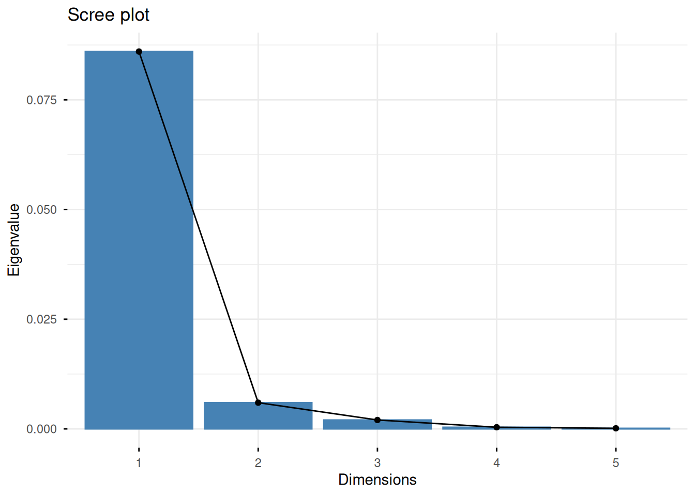
- Quels sont les types de logement le plus contributif à l’axe 1 ? Quels sont les départements ? Quelle information représente l’axe 1 ?
Reponse :
res_ca_surface$col$contrib|> as.data.frame() |> clean_names() |> arrange(-dim_1 ) dim_1 dim_2 dim_3
superficie_des_logements_30_m2 28.715414 28.638420 11.0811547
superficie_des_logements_100_m2 27.826872 28.827303 12.7430859
superficie_des_logements_40_a_60_m2 16.914716 2.470184 11.7483674
superficie_des_logements_30_a_40_m2 16.474992 1.729564 0.4619635
superficie_des_logements_80_a_100_m2 8.598025 6.701516 57.1833890
superficie_des_logements_60_a_80_m2 1.469981 31.633013 6.7820395
dim_4 dim_5
superficie_des_logements_30_m2 26.540798259 0.1755722
superficie_des_logements_100_m2 0.009199407 0.2627534
superficie_des_logements_40_a_60_m2 6.926639205 47.1693339
superficie_des_logements_30_a_40_m2 43.484844139 32.0679138
superficie_des_logements_80_a_100_m2 1.754410218 3.1232404
superficie_des_logements_60_a_80_m2 21.284108773 17.2011861res_ca_surface$row$contrib|> as.data.frame() |> clean_names() |> arrange(-dim_1 ) dim_1 dim_2 dim_3 dim_4
Paris 6.268411e+01 9.321511e+00 4.041862e+00 6.186692e-02
Alpes-Maritimes 3.780361e+00 3.555786e+00 9.152118e+00 1.093872e+01
Bouches-du-Rhône 1.939336e+00 1.094085e+01 5.911453e-01 6.883817e-01
Vendée 1.564934e+00 5.741239e-01 2.320109e+00 4.410830e-03
Moselle 1.385136e+00 7.293688e-01 1.326959e+00 5.645435e-01
Rhône 1.130439e+00 2.794485e+00 2.304340e+00 2.026087e+00
Deux-Sèvres 1.035874e+00 1.528044e+00 1.520419e-02 1.385654e-01
Dordogne 1.010184e+00 1.009132e+00 6.988398e-02 1.366580e+00
Ain 9.209077e-01 2.737641e-01 7.950488e-01 1.571443e+00
Landes 9.184054e-01 1.833412e+00 4.698321e-01 2.102910e+00
Côtes-d'Armor 8.934007e-01 4.579140e-01 1.775622e-02 5.958779e-01
Tarn 8.350199e-01 2.541504e+00 1.346898e-01 1.136835e+00
Finistère 8.260481e-01 1.408027e+00 2.627840e-01 1.290747e-01
Charente 7.673403e-01 8.880981e-01 1.792110e-01 5.692215e-01
Pas-de-Calais 7.668502e-01 6.837429e+00 7.970124e+00 7.187697e-01
Morbihan 7.447102e-01 1.239431e+00 6.735741e-01 2.139830e+00
Haut-Rhin 7.401403e-01 1.187016e-02 3.020670e+00 2.150629e+00
Charente-Maritime 7.264062e-01 1.819910e+00 3.791421e-01 7.977788e-01
Gers 7.187608e-01 2.695098e+00 7.061567e-01 5.851828e-01
Lot-et-Garonne 6.912640e-01 1.153475e+00 8.133183e-02 4.045760e-01
Haute-Saône 6.791874e-01 8.068143e-01 6.580465e-03 1.428565e-01
Tarn-et-Garonne 6.282428e-01 1.009765e+00 1.402998e-02 2.489562e+00
Meuse 5.857802e-01 1.212056e+00 2.638492e-02 1.751364e-01
Vosges 5.522452e-01 6.132001e-02 1.825540e-02 1.344403e-02
Ardèche 5.373896e-01 2.434483e-03 5.783157e-02 5.235887e-02
Saône-et-Loire 5.292881e-01 1.198828e-01 3.068033e-01 4.255747e-02
Manche 5.091099e-01 4.368849e-02 1.517312e-02 7.186379e-01
Maine-et-Loire 5.065972e-01 7.645863e-01 1.507052e+00 2.477187e-02
Loir-et-Cher 5.014206e-01 5.552183e-02 2.947201e-01 8.612202e-01
Jura 4.416488e-01 1.515713e-01 4.495773e-02 8.268123e-02
Haute-Loire 4.204756e-01 1.407420e-01 1.948254e-05 5.297701e-01
Ardennes 4.177770e-01 2.759867e-02 1.908551e-01 1.517771e-01
Drôme 4.033909e-01 6.819238e-02 5.732090e-03 6.473225e-02
Mayenne 3.911661e-01 1.804438e-03 8.428895e-01 4.556557e-01
Bas-Rhin 3.699122e-01 2.855172e+00 6.081321e+00 1.048697e+01
Eure 3.504019e-01 4.127485e-01 3.025794e-01 5.488027e-01
Vaucluse 3.397418e-01 7.025261e-02 1.163378e-01 1.750545e+00
Aude 3.286929e-01 3.120585e-02 9.340693e-01 2.786080e+00
Aisne 3.234741e-01 1.236667e+00 5.940361e-01 5.610350e-01
Hérault 3.181693e-01 3.325251e-01 1.430422e+00 2.178129e-02
Sarthe 3.162911e-01 4.206817e-01 3.844525e-01 1.298817e-01
Aveyron 3.140439e-01 1.996783e-01 7.053632e-02 1.443977e+00
Cher 3.080395e-01 5.549081e-01 1.077238e+00 4.588555e-04
Lot 2.915823e-01 4.707652e-01 3.860648e-03 4.919394e-02
Ariège 2.826488e-01 3.100704e-01 1.924108e-03 2.662363e-01
Loire 2.821378e-01 1.222877e+00 1.014178e-01 9.205517e-02
Corrèze 2.815629e-01 2.594722e-03 4.189572e-01 5.820056e-01
Var 2.479791e-01 2.733235e+00 1.883535e+00 5.549766e+00
Haute-Marne 2.422007e-01 7.671560e-02 4.116123e-03 5.604495e-02
Eure-et-Loir 2.393268e-01 2.313110e-01 4.626651e-02 7.348010e-02
Allier 2.385168e-01 3.232415e-01 1.503205e-01 5.522458e-03
Hautes-Pyrénées 2.354699e-01 4.860599e-01 2.560722e-01 7.168663e-04
Pyrénées-Atlantiques 2.350489e-01 1.376508e+00 7.594559e+00 1.732339e+00
Indre 2.334228e-01 5.302682e-01 3.878863e-01 1.457094e-02
Creuse 2.095263e-01 1.404754e-02 2.363234e-01 1.192201e-01
Haute-Garonne 2.022459e-01 3.885057e+00 2.127973e-01 2.800083e-01
Yonne 1.873049e-01 3.153244e-01 1.049696e-02 2.864330e-01
Doubs 1.846699e-01 8.966624e-02 6.514714e-01 2.045804e+00
Orne 1.766030e-01 8.300302e-01 3.716808e-01 8.773170e-03
Meurthe-et-Moselle 1.650516e-01 4.160465e-01 2.712328e-01 3.914726e-01
Vienne 1.580852e-01 1.485467e+00 1.504035e+00 9.177656e-01
Cantal 1.553222e-01 9.510476e-02 7.585456e-01 3.485512e-02
Marne 1.480841e-01 2.641567e-02 4.120755e-01 1.858076e+00
Isère 1.456979e-01 8.651401e-02 2.170429e-01 4.097948e+00
Yvelines 1.321452e-01 3.578724e-01 8.404569e+00 1.388171e+00
Oise 1.171769e-01 9.195490e-01 1.002701e-02 2.471331e-03
Nord 1.085135e-01 2.989995e+00 9.285963e+00 5.816096e-01
Loiret 1.076708e-01 4.343560e-02 5.784709e-02 1.413718e+00
Nièvre 1.076524e-01 8.936423e-01 4.332855e-02 1.128623e-01
Gard 9.993500e-02 4.210970e-01 9.213570e-01 9.063014e-01
Val-d'Oise 8.312911e-02 1.751702e+00 5.016068e-01 7.464588e-01
Essonne 8.169143e-02 2.061430e+00 1.317498e+00 3.075335e-01
Aube 6.964777e-02 2.190827e-01 2.694338e-02 8.406912e-02
Puy-de-Dôme 6.501532e-02 6.307825e-02 8.230762e-01 4.788274e+00
Ille-et-Vilaine 6.244703e-02 1.097127e+00 3.040732e+00 2.075427e+00
Haute-Vienne 4.442207e-02 2.518921e-04 9.974209e-01 4.058653e-01
Alpes-de-Haute-Provence 3.256670e-02 4.543276e-01 5.574621e-02 1.351439e-01
Lozère 3.210350e-02 1.745785e-02 6.427938e-05 3.441352e-07
Somme 3.050883e-02 5.196076e-01 2.342179e+00 2.421220e+00
Territoire de Belfort 2.918429e-02 6.897084e-02 1.004301e-01 8.917382e-01
Loire-Atlantique 2.782285e-02 3.776865e-01 3.352179e-01 4.343400e-01
Indre-et-Loire 2.346671e-02 5.347345e-05 3.765727e-02 2.415264e-01
Gironde 1.001877e-02 2.425284e+00 1.871158e-01 1.851228e-01
Pyrénées-Orientales 8.894008e-03 5.272907e-01 1.113752e-01 5.824808e+00
Calvados 8.689088e-03 9.914996e-02 2.118215e-01 2.685353e-03
Hautes-Alpes 6.551580e-03 5.151958e-02 2.214319e-01 6.631566e-01
Seine-et-Marne 5.769421e-03 7.754028e-01 8.462952e-01 1.154388e+00
Côte-d'Or 3.956241e-03 1.583181e-01 9.518563e-02 2.103842e+00
Haute-Corse 2.773447e-03 1.372566e+00 2.560122e-01 1.976573e-03
Seine-Maritime 1.554802e-03 3.295572e+00 1.215661e-01 8.763602e-01
Corse-du-Sud 1.140884e-03 1.016877e+00 1.698233e-01 9.236135e-02
Haute-Savoie 6.502665e-04 5.703495e-01 4.614412e+00 6.068598e-04
Savoie 3.017790e-04 2.509380e-01 5.344607e-01 1.469702e+00
dim_5
Paris 2.418445e-01
Alpes-Maritimes 3.238472e+00
Bouches-du-Rhône 1.051335e+01
Vendée 7.411276e-02
Moselle 1.401309e-02
Rhône 5.388474e+00
Deux-Sèvres 9.302222e-01
Dordogne 7.865749e-01
Ain 2.109573e-01
Landes 2.492821e-01
Côtes-d'Armor 5.215911e-01
Tarn 8.961564e-01
Finistère 1.934099e-01
Charente 2.584109e-01
Pas-de-Calais 8.095554e-01
Morbihan 4.010905e-01
Haut-Rhin 4.704851e-01
Charente-Maritime 1.353637e+00
Gers 6.273153e-01
Lot-et-Garonne 7.531635e-01
Haute-Saône 8.132367e-01
Tarn-et-Garonne 1.409744e-01
Meuse 1.426288e-01
Vosges 1.172648e-01
Ardèche 1.796741e-01
Saône-et-Loire 3.000001e-03
Manche 7.374001e-01
Maine-et-Loire 1.764112e-01
Loir-et-Cher 4.323840e-01
Jura 1.125315e+00
Haute-Loire 3.558368e-01
Ardennes 1.360728e-02
Drôme 1.742571e+00
Mayenne 1.609158e+00
Bas-Rhin 5.220907e-04
Eure 7.849360e-01
Vaucluse 1.368517e+00
Aude 2.277205e-05
Aisne 3.813118e-04
Hérault 2.764371e+00
Sarthe 1.748003e-01
Aveyron 5.696293e-02
Cher 3.888810e-02
Lot 3.215370e-01
Ariège 1.103758e-04
Loire 2.160809e+00
Corrèze 4.360206e-02
Var 2.928501e+00
Haute-Marne 2.299290e-04
Eure-et-Loir 8.402110e-01
Allier 2.622996e-01
Hautes-Pyrénées 1.876990e-01
Pyrénées-Atlantiques 2.488121e-01
Indre 2.548158e-02
Creuse 5.524279e-03
Haute-Garonne 1.056200e+01
Yonne 2.766871e-02
Doubs 2.204750e+00
Orne 5.304920e-01
Meurthe-et-Moselle 4.351599e-01
Vienne 2.233769e+00
Cantal 4.469608e-03
Marne 2.625637e-02
Isère 2.720132e-01
Yvelines 4.220278e-01
Oise 2.443686e-04
Nord 1.840123e+01
Loiret 3.027375e-02
Nièvre 3.640822e-02
Gard 1.152488e+00
Val-d'Oise 5.363217e-01
Essonne 2.098190e+00
Aube 9.956907e-01
Puy-de-Dôme 8.724297e-01
Ille-et-Vilaine 7.565479e-01
Haute-Vienne 1.410804e-01
Alpes-de-Haute-Provence 1.023424e+00
Lozère 1.227268e-01
Somme 1.492588e-02
Territoire de Belfort 2.693552e-01
Loire-Atlantique 2.220192e+00
Indre-et-Loire 4.778303e-01
Gironde 4.821451e-02
Pyrénées-Orientales 8.015312e-02
Calvados 1.720094e-01
Hautes-Alpes 2.976093e-02
Seine-et-Marne 5.092744e-02
Côte-d'Or 7.842597e-02
Haute-Corse 2.405432e+00
Seine-Maritime 1.041928e-01
Corse-du-Sud 1.466214e+00
Haute-Savoie 4.398973e-01
Savoie 1.521011e+00la variable nombre de petits appartements represente les départements avec une forte vs faible proportion de petits logement et par oppositions une faible/forte proportion des logements et nombre de grands logements sont très contributifs de l’axe1 comme les départements Paris Alpes Maritime Bouches du rhone et dans une moindre mesure Vendée et Moselle.
- Représenter sur le même graphique les lignes et les colonnes du tableau de contingence dont la qualité de représentation dépasse 0.8. Pour cela on peut s’aider de la structure suivante dans laquelle il faut juste précalculer les variables rows_keep et cols_keep
fviz_ca_biplot(
res_ca_surface,
select.row = list(name = rows_keep),
select.col = list(name = cols_keep),
repel = TRUE
)Reponses :
rows_keep <- res_ca_surface$row$cos2 |>
as.data.frame() |>
filter(`Dim 1` + `Dim 2` > 0.8) |>
rownames_to_column('dept') |> pull(dept)
cols_keep <- res_ca_surface$col$cos2 |>
clean_names() |>
as.data.frame() |>
filter(dim_1 + dim_2 > 0.8) |>
rownames_to_column('surface') |> pull(surface)
fviz_ca_biplot(
res_ca_surface,
select.row = list(name = rows_keep),
select.col = list(name = cols_keep),
repel = TRUE
)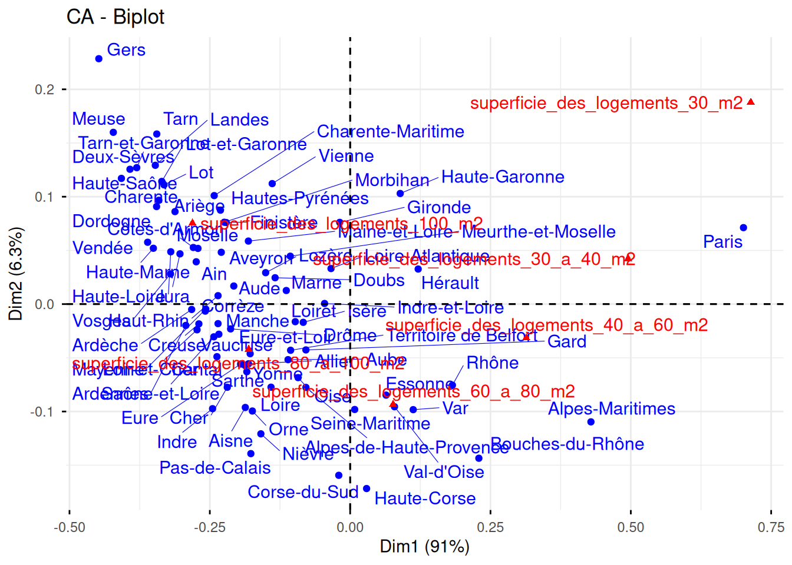
- On souhaite faire le lien avec des éventuelles variables supplémentaires. Quel graphique proposez vous ? Quelle information pouvons-nous en tirer ? (Indication plot avec l’option choix = “quanti.sup”).
Reponse :
plot(res_ca_surface, choix = "quanti.sup",
col.quanti.sup = "#33BB33")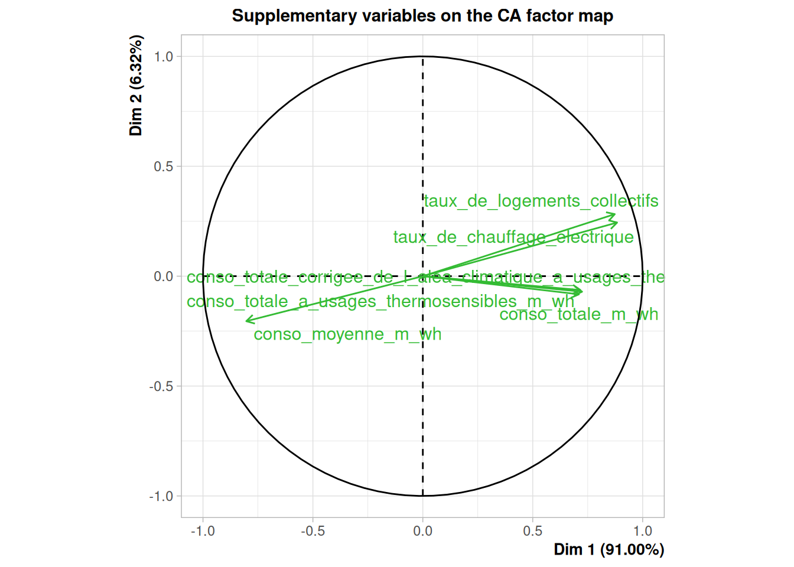
Typologie de sites écologiques
Contexte
On s’intéresse à la caractérisation et à la typologie de sites écologiques décrits par des variables qualitatives liées au milieu, à la gestion et aux pressions anthropiques.
Chaque individu statistique correspond à un site d’observation (parcelle, zone naturelle, site suivi). Le jeu de données comporte 200 sites.
L’objectif de l’analyse est
- d’explorer la structure des données qualitatives,
- d’identifier les grands gradients écologiques,
Données
Le fichier [sites_acm.csv]((https://raw.githubusercontent.com/MarieEtienne/MAF/refs/heads/master/sites_acm.csv) contient les variables suivantes.
- Milieu : urbain / periurbain / rural
- Couverture : boise / prairial / agricole / mixte
- Gestion : fauche_tardive / fauche_frequente / paturage / aucune
- Pression : forte / moyenne / faible
- Eau : proche / eloigne
- Artificialisation : oui / non
- Usage : loisirs / agricole / conservation / mixte
On a également des informations sur * Richesse écologique : faible / moyenne / elevee (classe de richesse spécifique) * Region : Nord / Ouest / Sud / Est
Description des données
- Donner le nombre d’individus et de variables.
Reponse : 200 sites = 200 individus, 9 variables
- Dans l’objectif de faire une typologie des sites, préciser quelles variables vous souhaitez considérer comme actives et lesquelles seront supplémentaires.
Reponse: les variables supp sont la richesse écologiques et la région. On pourrait ajouter la région mais ce que l’on souhaite surtout voir ce sont les caractéristiques biologiques des sites, la région ne nous intéresse pas vraiment.
- Identifier des éventuelles modalités rares
Reponse
sites_dta <- read.csv("sites_acm.csv", row.names = 1)
## pour compter facilement on peut utiliser le résumé d'un facteur, pour cela on transforme tous els characters en facteurs et on appelle ensuisuite le résumé
sites_dta |> mutate(across(where(is.character), as.factor)) |>summary() Milieu Couverture Gestion Pression Eau
periurbain:64 agricole:40 aucune :47 faible :56 eloigne:100
rural :71 boise :48 fauche_frequente:60 forte :66 proche :100
urbain :65 mixte :63 fauche_tardive :54 moyenne:78
prairial:49 paturage :39
Artificialisation Usage Richesse Region
non: 86 agricole :41 elevee :44 Est :54
oui:114 conservation:42 faible :88 Nord :41
loisirs :61 moyenne:68 Ouest:50
mixte :56 Sud :55 Aucune modalité n’est rare seule mais on s’attend à avoir des croisements peu fréquents dans la table de contingence par exemple artificialisation oui et gestion fauche_frequente..
Construire une typologie des sites
Mettre en place l’ACM
Que signifie ACM ?
Faire une ACM sur les données à l’aide de la fonction MCA, (prendre garde aux variables supplémentaires)
Réponse
sites_mca <- MCA(sites_dta,
quali.sup = 8:9,
graph = FALSE)- Présenter les valeurs propres et commenter la part d’inertie expliquée par les premiers axes.
Réponse
fviz_eig((sites_mca))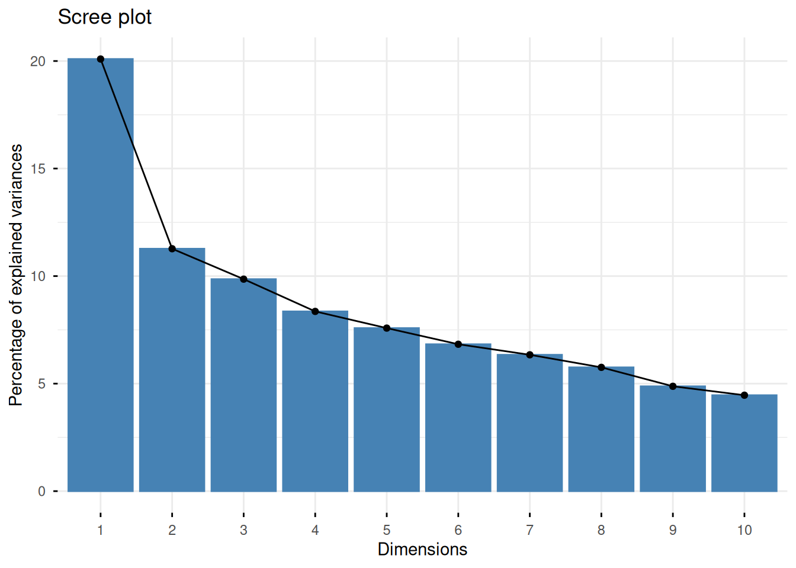
Si linertie était équitablement répartie, on s’attend à une inertie de 10 pour centes par axe, on peut garder au moins les deux premiers. et peut etre aller voir ce qui se passe sur le 3.
Donner du sens aux axes
Pour les deux premiers axes :
- Identifier les modalités les plus contributrices.
Reponse:
sites_mca$var$contrib |> as.data.frame() |>
slice_max(order_by = `Dim 1`, n = 4) Dim 1 Dim 2 Dim 3 Dim 4 Dim 5
urbain 13.953267 2.7603356 2.660471931 1.0885077658 0.5613187
rural 13.279110 2.7047769 0.879378315 1.8652438173 1.4209383
Usage_loisirs 11.466737 1.9848734 1.764214241 0.0004333422 0.3971593
non 9.640599 0.2914205 0.002818272 2.3591955088 0.3292193sites_mca$var$contrib |> as.data.frame() |>
slice_max(order_by = `Dim 2`, n = 4) Dim 1 Dim 2 Dim 3 Dim 4 Dim 5
Usage_conservation 1.668110319 14.71640 17.209517 0.5516292 0.126978334
aucune 0.261143791 12.09642 17.172466 1.6029296 0.003147671
Pression_moyenne 0.070829926 11.81945 1.381917 13.1097564 0.567047714
periurbain 0.005429978 11.60481 6.924758 6.1997292 4.042398726ou bien
fviz_contrib(sites_mca, choice = "var", axes = 1)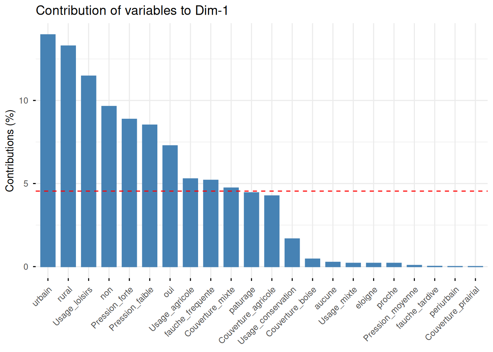
fviz_contrib(sites_mca, choice = "var", axes = 2)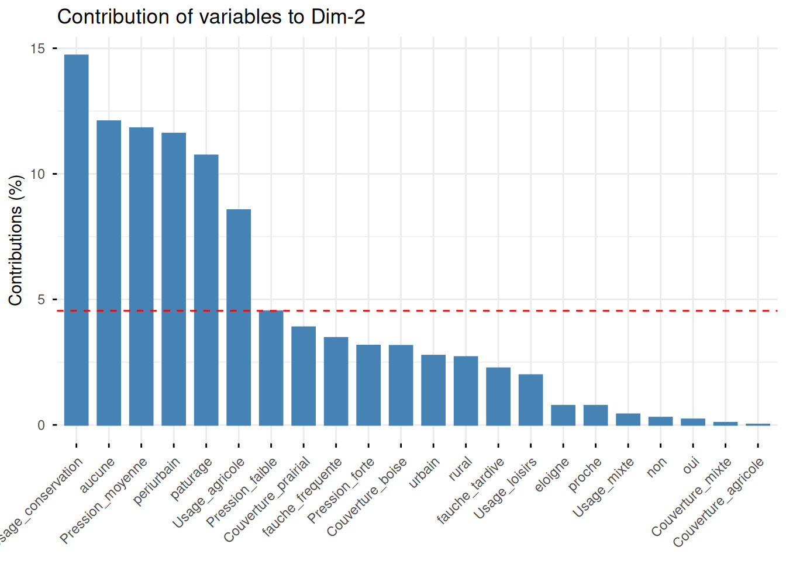
- Identifier les modalités les mieux représentées (cos² élevés).
sites_mca$var$cos2 |> as.data.frame() |>
filter(`Dim 1` > 0.5) Dim 1 Dim 2 Dim 3 Dim 4 Dim 5
rural 0.6205111 0.070901850 2.015910e-02 0.03625035 0.025051622
urbain 0.6230349 0.069142321 5.827871e-02 0.02021455 0.009456406
non 0.5097643 0.008644325 7.310769e-05 0.05188304 0.006567965
oui 0.5097643 0.008644325 7.310769e-05 0.05188304 0.006567965sites_mca$var$cos2 |> as.data.frame() |>
filter(`Dim 2` > 0.3) Dim 1 Dim 2 Dim 3 Dim 4 Dim 5
Pression_moyenne 0.003499671 0.3276069 0.03349711 0.26940217 0.010570855
Usage_conservation 0.063641140 0.3149636 0.32210437 0.00875299 0.001827776sites_mca$var$contrib |> as.data.frame() |>
slice_max(order_by = `Dim 2`, n = 4) Dim 1 Dim 2 Dim 3 Dim 4 Dim 5
Usage_conservation 1.668110319 14.71640 17.209517 0.5516292 0.126978334
aucune 0.261143791 12.09642 17.172466 1.6029296 0.003147671
Pression_moyenne 0.070829926 11.81945 1.381917 13.1097564 0.567047714
periurbain 0.005429978 11.60481 6.924758 6.1997292 4.042398726fviz_cos2(sites_mca, choice = "var", axes = 1)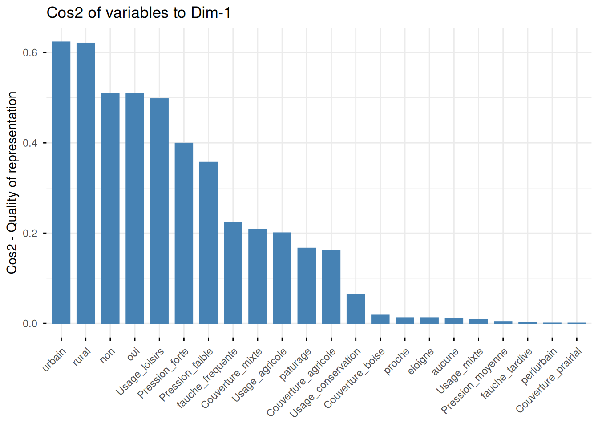
fviz_cos2(sites_mca, choice = "var", axes = 2)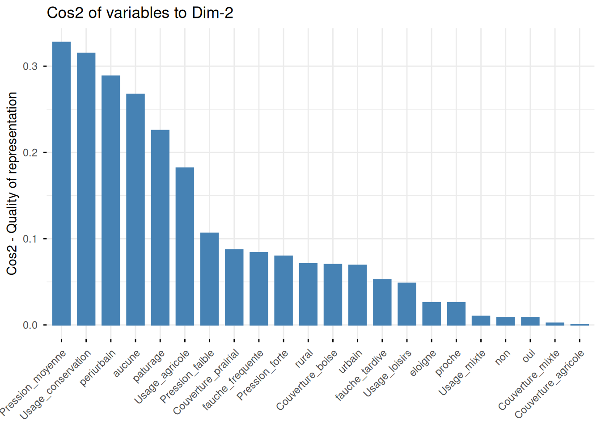
Visualisation
- Représenter les modalités sur le plan factoriel (1,2). et discuter de leur organisation
Reponse
fviz_mca_var(sites_mca, choice = "var.cat", invisible = "quali.sup")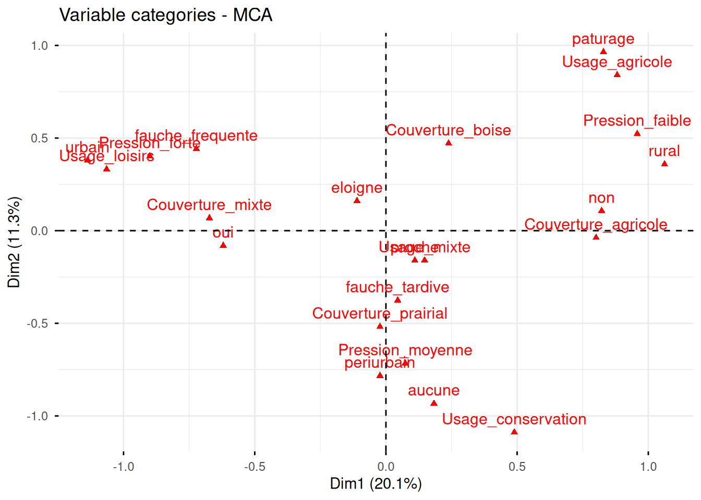
L’axe 1 montre plutot enthropise à gauche versus plus rural à droite. l’axe 2 en bas montre les zones naturelles sans gestion qui s’oppose aux forets.
Au cas ou si les étudiants font
fviz_mca_var(sites_mca, choice = "var")
ce qu’on voit dans ce cas c’est la qualité de la représentation dans le premier plan.
- Représenter les individus, colorés selon la variable Milieu.
Reponse : c’est le moemnt de parler des ellipses. elles sont construites à partir de la covariance au sein de chaque groupe défini par habillage. Sous l’hypothèse d’une distribution gaussienne c’est la ligne de niveau correspondnat à la proba 0.95 d’etre dans l’ellipse.
fviz_mca_ind(sites_mca,
habillage = "Milieu",
addEllipses = TRUE,
ellipse.level = 0.95,
repel = TRUE)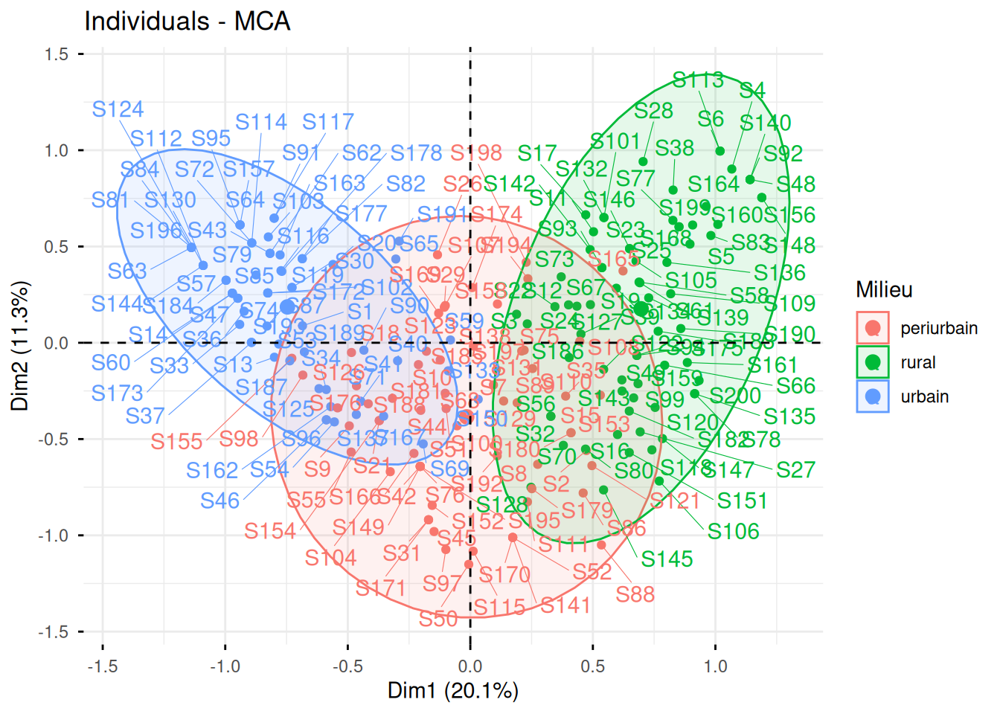
5. Variables supplémentaires
- Projeter les variables Richesse et Region sur le plan factoriel et commenter la position des différentes classes de richesse spécifique.
Reponse : la richesse est plus forte à droite dans les milieux non urbains
fviz_mca_var(sites_mca, choice = "var.cat")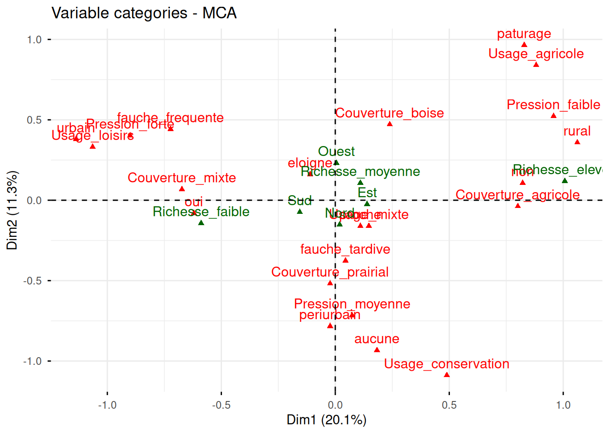
fviz_mca_var(sites_mca, choice = "var")
fviz_mca_ind(sites_mca,
habillage = "Richesse",
addEllipses = TRUE,
ellipse.level = 0.95,
repel = TRUE)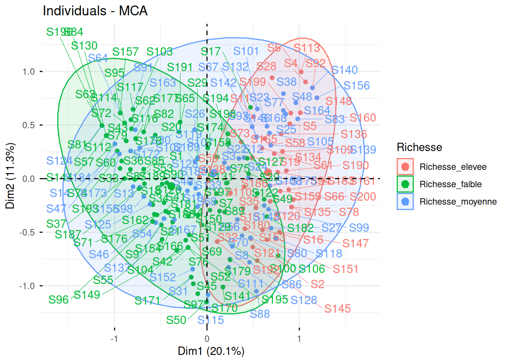
- Discuter le rôle (ou l’absence de rôle) de la variable Region dans la structuration des données.
Réponse La région se semble pas liée à la richesse